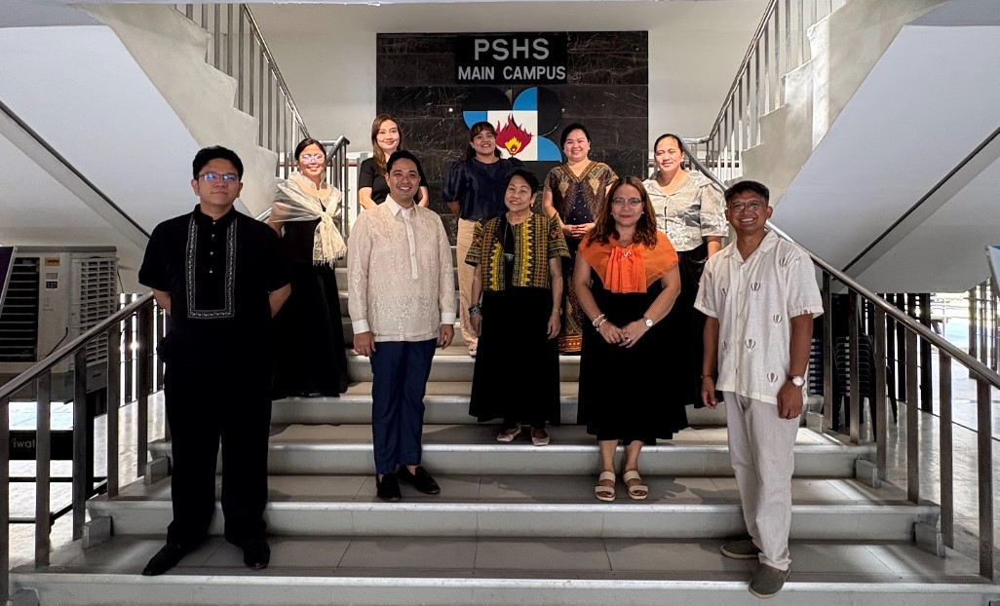

Introduction to Website
Welcome to the official platform honoring the exceptional teachers of the Philippine Science High School - Main Campus. This site aims to provide an overview of different subject units and their backgrounds as well as notable facts. This site also aims to give students minimal info about different subject teachers, giving them a deeper look into the people who guide and shape their academic journey. It also features an interactive voting system wherein the students can choose to participate in choosing their favorite teachers with a selected category within the community.
Besides being an information hub, this site also serves as a platform of appreciation for the hard work and commitment of different teachers through a freedom wall wherein students can give messages of appreciation. By highlighting this, the students will gain awareness, respect, and gratitude for the educators who continue to inspire them until the end of their academic journey in PSHS-MC.

